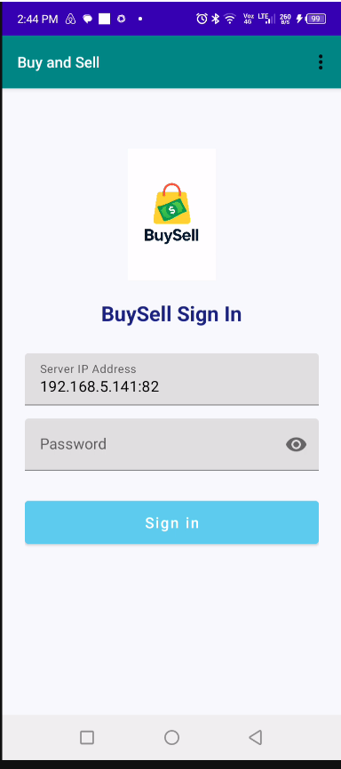
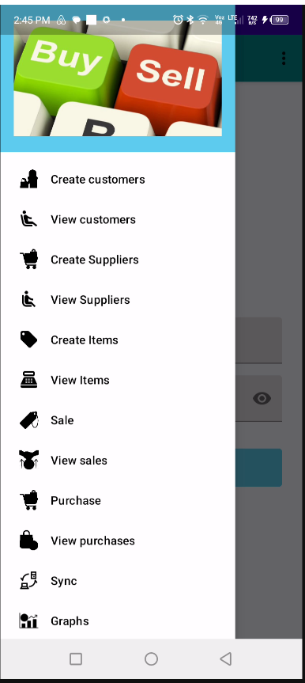
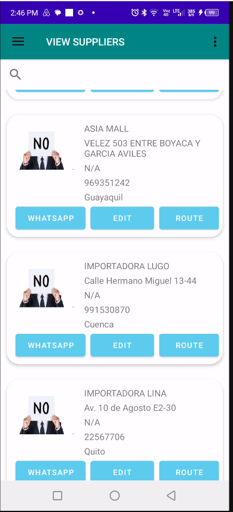
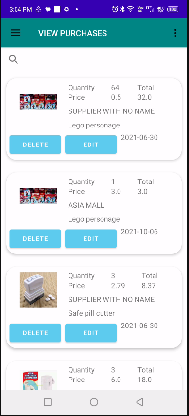
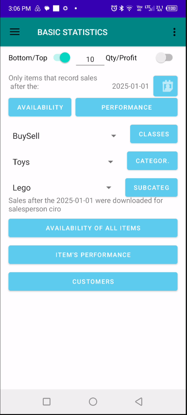

Designed For Mobility & Field Operations
The mobile application brings core business functionality directly to android phones. Users can create customers, manage suppliers, register sales and purchases, monitor business activity, visualize information geographically, and synchronize data with the central platform.
Whether working in the office, visiting customers, managing field operations, or supporting remote teams, the mobile application keeps business information accessible and up to date.
Secure User Login
Authentication screen providing secure access to company information, user permissions, and synchronized business data.

Mobile Application Dashboard
Central navigation screen providing quick access to customers, suppliers, inventory, purchases, sales, maps, synchronization, and analytics.

Customer & Supplier Creation
Create customer and supplier records directly from the mobile device, allowing field personnel to register new business partners immediately.

Customer & Supplier Directory
Browse and manage existing customers and suppliers, review information, and access commercial records from anywhere.

Product Creation
Register new products and inventory items directly from the field, eliminating delays and improving operational efficiency.

Inventory Item Catalog
View available products, inventory information, and item details through an intuitive mobile interface.

Sales Registration
Record customer sales in real time, allowing sales representatives to capture transactions immediately while visiting customers.

Sales History
Review completed sales transactions, monitor performance, and verify commercial activity from mobile devices.

Purchase Registration
Create purchase transactions and supplier orders directly from the field, ensuring business operations continue without delays.

Purchase History
Access historical purchasing information, review supplier activity, and analyze procurement operations.

Data Synchronization
Synchronize customers, suppliers, products, sales, purchases, and operational data with the desktop platform.

Charts & Business Analytics
Generate visual reports, performance indicators, and business statistics directly from the mobile application.

Interactive Geographic Maps
Visualize customers, suppliers, and sales representatives on interactive maps, supporting route planning, territory management, and field operations.